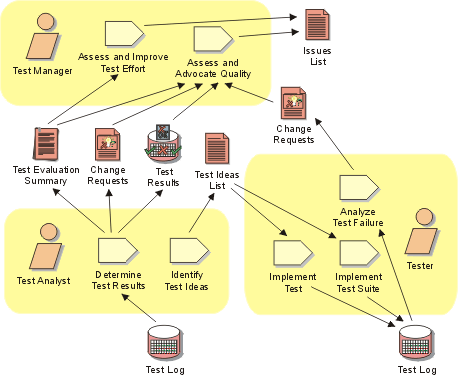

Disciplines >
Disciplines >
 Test >
Test >
 Workflow >
Achieve Acceptable Mission
Workflow >
Achieve Acceptable Mission
Disciplines >
Test >
Workflow >
Achieve Acceptable Mission
Workflow Detail:
|
Topics |
 |
The purpose of this workflow detail is to deliver a useful evaluation result
to the stakeholders of the test effort—where useful evaluation result is
assessed in terms of the Evaluation Mission. In most cases that will mean focusing
your efforts on helping the project team achieve the Iteration Plan objectives
that apply to the current test cycle.
For each test cycle, this work is focused mainly on:
This work is primarily centered around the Test Manager and Test Analyst roles, although success relies heavily on the work of the Tester. The most important skills required for this work include problem and results analysis, communication and negotiation, as well as the ability to identify and focus on the most important items (and avoid being sidetracked by unimportant details).
As a heuristic for relative resource allocation by phase, typical percentages of test resource use for this workflow detail are: Inception — 10%, Elaboration — 00%, Construction — 20% and Transition — 30%.
Given that providing focused evaluation feedback and achieving test-cycle closure are the objectives of this work, ongoing prioritization of the work and strategic management of the test resources is required. Focus continually on identifying and executing the minimum set of specific tasks to achieve the evaluation mission. Ongoing involvement by the stakeholders in the test and evaluation effort is critical to ensure the appropriate focus is maintained and, ultimately, that the work is successful.
Notice that for some iterations it may not be possible to achieve the Evaluation Mission as originally defined. Rather than simply abandoning the test and evaluation effort, it is important to find an appropriate and agreeable revision of the original Evaluation Mission based on the current situation, and attempt to provide useful evaluation information to the stakeholders of the test effort.
This work typically starts toward the end of each test cycle as suitable breadth and depth is achieved in the Workflow Detail: Test and Evaluate. For test cycles earlier in the project life-cycle, there is typically less work to be managed, therefore less effort is required to address this workflow detail. In later iterations—especially those toward the end of the Elaboration phase and throughout the Construction phase—this work becomes more important and typically requires more focused effort.
The availability of analysis tools that provide accurate and timely results has an impact on resourcing this work. Without the use of appropriate tools, this task quickly becomes unmanageable as the test effort progresses and increasingly more detail needs to be analyzed and assessed manually.
The following references provide more detail to help guide you in performing this work:
For information about the underlying concepts behind this work:
|
Rational Unified
Process
|